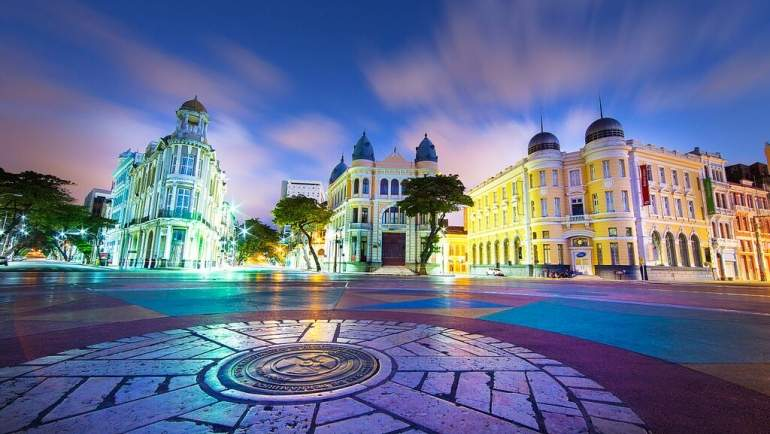

Conheça o Marco Zero no Recife
O Marco Zero em Recife é um dos destinos históricos mais importantes do nordeste do país. A região reúne atrações históricas e culturais, centro de artesanato e ótimos restaurantes. Além disso, é o principal local do carnaval de Pernambuco, reunindo música, alegria e muita festa. A seguir, saiba mais detalhes sobre o destino. A praça tem o nome original de Praça Barão do Rio Branco, todavia ficou conhecida como Praça do Marco Zero pelo fato de que nela encontra-se o quilometro zero das estradas de Pernambuco. É formada por um marco de cor vermelha doado pelo Clube do Automóvel. Na lateral da praça encontra-se a estatua do Barão do Rio Branco em bronze, com 2,80m de altura, do escultor Felix Charpentier. Já no centro pode ser vista a rosa dos ventos do pintor Cícero Dias. Nos períodos de momo a praça funciona como quartel general do carnaval multicultural do Recife.
Dicas importantes

Antes de conhecer as atrações que cercam o Marco Zero, aproveite também para ficar por dentro de dicas e informações essenciais sobre o local. Assim, é possível planejar melhor a viagem e aproveitar a atração com segurança:
Quando ir: entre os meses de setembro e fevereiro, pois a época oferece um clima agradável e com menor probabilidade de chuva.
Melhor horário para ir: escolha passear pela região durante a manhã. Neste período o número de visitantes é menor e as temperaturas estão mais amenas.
Estacionamento: há boas opções de estacionamento nas proximidades do Marco Zero. Você pode estacionar na Praça do Arsenal ou no shopping Paço Alfândega.
Curtiu o roteiro? Então, programe-se quanto antes para visitar o Marco Zero, em Recife! Caso queira estender a viagem, visite Olinda, que também valoriza a cultura nordestina!